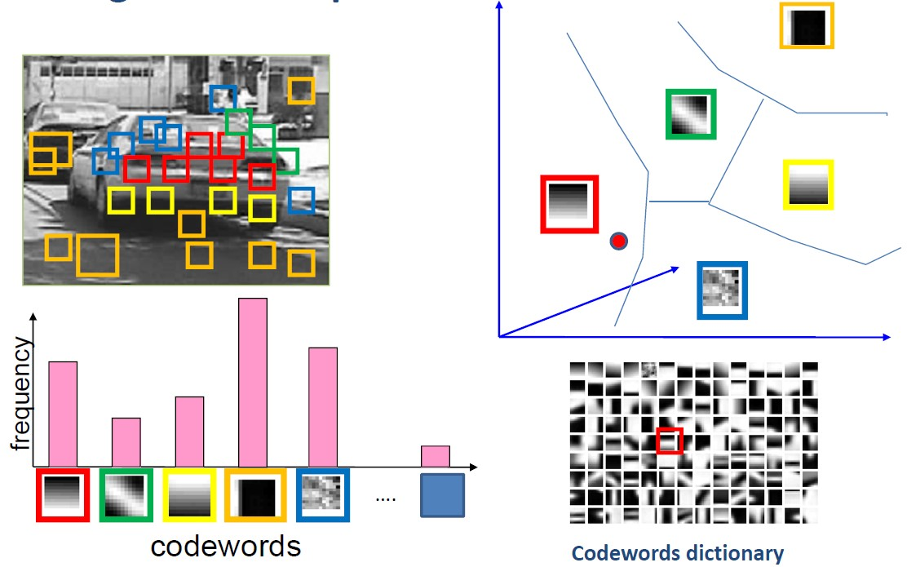
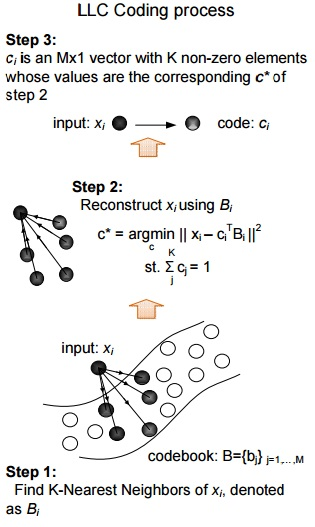

Feature Coding
Both VQ coding and LLC coding schemes require a codebook, which is generated by k-means in this project.
Vector Quantization Coding (Bag-of-Words)
- Find the nearest neighbor in the codebook for each descriptor
- Compute frequencies histogram of all descriptors' nearest neighbor.
- Normalize the histogram using L1-norm

Illustration of Bag-of-Words coding scheme.
Locality-constrained Linear Coding
- For each descriptor, find k nearest neighbors in the codebook, we use k=5 in this project.
- Solve a regularized least square fit problem, trying to reconstruct the descriptor using those k neighbors.
- Using the weights as the coding vector of each descriptor, noting that the coding vector will only have k non-zero entries.
- Normalize the vector using L1-norm

Illustration of LLC coding scheme.